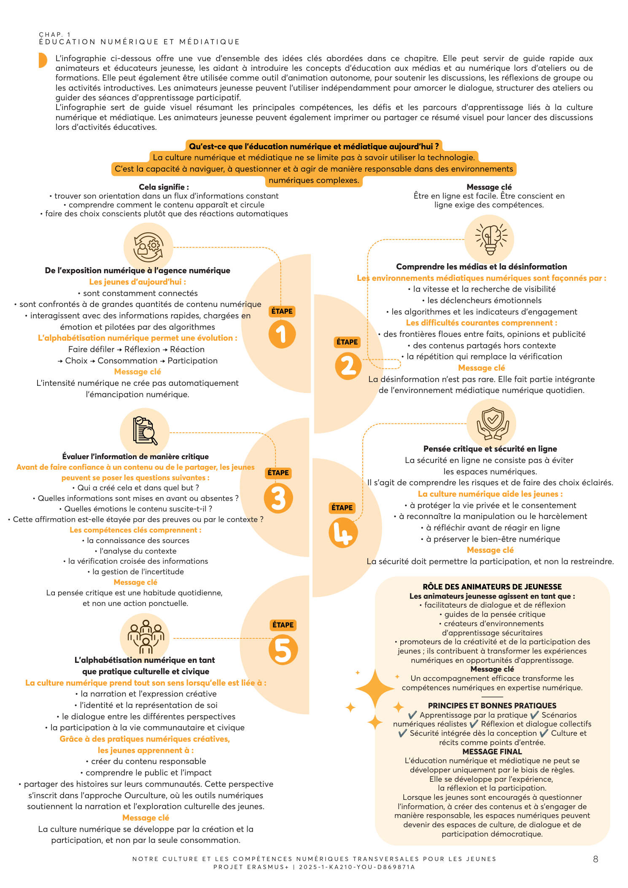

R É S U M É I N F O G R A P H I Q U E

Résumé visuel du chapitre : cliquez pour agrandir ou télécharger.
Télécharger l’infographie (PDF)Introduction

Ce chapitre présente la culture numérique et médiatique comme une compétence fondamentale pour les jeunes évoluant dans l’environnement numérique complexe d’aujourd’hui. Il explore la production, la diffusion et la consommation de l’information, et explique comment les jeunes peuvent développer leur esprit critique, une conscience éthique et les compétences nécessaires à une participation responsable dans l’espace numérique. Conçu comme un guide pratique pour les animateurs et les animatrices jeunesse, ce chapitre associe la compréhension conceptuelle à des outils d’apprentissage concrets, des activités participatives et des exemples. En combinant théorie et pratique, il aide les éducateurs et animatrices à accompagner les jeunes dans leur transition d’une consommation passive des médias à une prise de conscience critique et une contribution numérique responsable. Elle promeut également des pratiques numériques frugales, encourageant les jeunes à produire et à partager du contenu de manière consciente, à éviter l’accumulation numérique inutile et à s’engager en ligne avec une finalité.
Comprendre la culture numérique et l’éducation aux médias
Bien que les termes « littératie numérique » et « littératie médiatique » soient souvent employés sans distinction, ils désignent des compétences légèrement différentes. La littératie numérique renvoie généralement à la capacité d’utiliser les technologies numériques de manière efficace et responsable. Elle englobe des compétences telles que la navigation sur les plateformes en ligne, la compréhension du fonctionnement des outils numériques, la protection des données personnelles et l’interaction sécurisée dans les environnements numériques. La littératie médiatique, quant à elle, se concentre plus spécifiquement sur la compréhension et l’analyse critique des contenus médiatiques. Elle implique de reconnaître comment l’information est produite, d’identifier les biais ou les manipulations, d’évaluer les sources et de comprendre comment les messages médiatiques influencent les opinions et les perceptions. En pratique, ces compétences sont étroitement liées. Les jeunes ont besoin à la fois de compétences numériques et d’une compréhension critique des médias pour évoluer de manière responsable dans l’environnement informationnel contemporain.
DigComp 3.0 : lien avec le chapitre
Ce chapitre contribue principalement à trois domaines de DigComp 3.0 :
- Recherche, évaluation et gestion de l’information
- Communication et collaboration
- Sécurité, bien-être et usage responsable
Objectifs d’apprentissage
À la fin de ce chapitre, les animateurs jeunesse seront capables de :
- aider les jeunes à comprendre que la culture numérique et médiatique est bien plus qu’une simple compétence technique ;
- mettre l’accent sur l’orientation, la pensée critique et la responsabilité ;
- aider les jeunes à reconnaître la désinformation, la manipulation et l’influence des algorithmes ;
- faciliter une participation numérique sûre, éthique et réfléchie ;
- mettre en œuvre des outils et des activités pratiques qui renforcent l’engagement critique des médias ;
- utiliser des études de cas et des exemples pour relier la théorie à la pratique du travail auprès des jeunes.
Sections
- Section 1 | Environnements numériques, consommation des médias et désinformation
- Section 2 | Compétences clés
- Section 3 | Outils pratiques & Activités
- Section 4 | Études de cas et pratiques inspirantes
Section 1 · Environnements numériques, consommation des médias et désinformation
Cadre conceptuel
Nous nous réveillons devant des écrans, apprenons grâce aux écrans, communiquons à travers des écrans et appréhendons de plus en plus le monde à travers des interfaces numériques. Actualités, opinions, images et récits circulent en continu, souvent sans frontière nette entre faits et interprétations, information et divertissement, ou communication publique et privée. Dans un tel contexte, le principal défi n’est plus l’accès à l’information, mais l’orientation au sein de celle-ci. Les jeunes sont submergés par un flux constant de contenus et doivent fréquemment décider à quoi se fier, quoi partager et comment réagir. Au quotidien, cette situation se manifeste de façon anodine : une tendance virale sur TikTok se propage en quelques heures, une capture d’écran se diffuse rapidement dans des groupes WhatsApp, ou une plateforme recommande sans cesse des vidéos similaires en fonction des interactions précédentes. Ces expériences illustrent comment les environnements numériques façonnent l’attention, influencent la perception et orientent les comportements. La culture numérique émerge précisément à la croisée des opportunités et des risques. Si les espaces numériques offrent des possibilités inédites de participation, d’expression et de connexion, ils exposent aussi les utilisateurs à la désinformation, à la manipulation et à des structures algorithmiques invisibles. La culture numérique devient ainsi une compétence fondamentale pour s’orienter dans la vie sociale, culturelle et civique contemporaine.
1.1.Qu’est-ce que la culture numérique aujourd’hui ?
L’éducation au numérique aujourd’hui repose sur un constat simple : le monde numérique n’est plus un lieu que l’on fréquente occasionnellement, mais un espace où l’on vit en permanence. Nombre de jeunes commencent et terminent leur journée devant un écran. Avec le temps, cette présence constante devient presque imperceptible, et pourtant, elle influence profondément la manière dont les jeunes apprennent, communiquent, se forgent des opinions et tissent des liens. C’est pourquoi l’éducation au numérique ne se résume pas à « bien utiliser la technologie ». Savoir ouvrir une application, publier une vidéo ou naviguer sur une plateforme ne représente que la surface de la compétence numérique. Le véritable enjeu est de comprendre comment les environnements numériques influencent l’attention, les émotions, le jugement et les interactions sociales.
La culture numérique implique donc une capacité d’orientation : celle de trouver son chemin dans un paysage informationnel dense et en constante évolution. L’information en ligne arrive rarement de manière calme ou séquentielle. Elle se présente plutôt comme un flux continu de titres, d’images, de courtes vidéos, de commentaires et de notifications, dont beaucoup sont conçus pour susciter des réactions émotionnelles immédiates. Dans ces conditions, le principal risque n’est pas seulement la présence de fausses informations, mais aussi la disparition de la réflexion. Lorsque les réactions deviennent automatiques, la pensée critique intervient souvent trop tard. La culture numérique contribue à rétablir cette pause en encourageant l’habitude simple de se poser des questions avant de croire ou de partager une information.
Les questions clés sont notamment les suivantes :
- Qui a créé ce contenu et dans quel but ?
- Quelles preuves sont présentées et quelles preuves pourraient manquer ?
- Le ton est-il informatif, persuasif ou provocateur ?
- L’information est-elle à jour ou sortie de son contexte ?
Ces questions n’ont pas pour but de susciter la suspicion, mais de favoriser un jugement responsable et une prise de décision plus réfléchie.
1.2.Perception des compétences numériques
Un autre défi majeur mis en lumière par l’enquête et les groupes de discussion menés auprès des jeunes dans le cadre de ce projet est la perception largement répandue selon laquelle nombre d’entre eux « savent déjà utiliser les médias numériques ». Ayant grandi entourés de smartphones, de réseaux sociaux et d’applications de messagerie, les jeunes associent souvent la compétence numérique à la familiarité et à la rapidité plutôt qu’à une analyse critique. Nombre d’entre eux se sentent à l’aise pour naviguer sur les plateformes, publier du contenu ou interagir en ligne, ce qui peut donner l’impression qu’une formation complémentaire en littératie numérique est superflue. Or, les résultats des recherches menées dans le cadre de ce projet révèlent une réalité différente. Si les jeunes font généralement preuve de solides compétences pratiques, comme l’utilisation d’applications ou la création de contenu, ils rencontrent davantage de difficultés lorsqu’il s’agit d’évaluer l’information, de reconnaître la désinformation, de comprendre l’influence des algorithmes ou d’identifier les médias manipulés.
Ces constats sont issus de l’enquête et des groupes de discussion menés dans le cadre du projet auprès de jeunes participants et d’animateurs jeunesse des pays partenaires. Les résultats mettent en lumière un écart important entre l’usage du numérique et la maîtrise critique de ses compétences numériques. L’ensemble des résultats de l’enquête et les analyses qualitatives des groupes de discussion sont disponibles dans le rapport de recherche du projet.
 Analyse des besoins européens
Analyse des besoins européens
Cette compétence perçue peut parfois conduire à un excès de confiance.
Lorsque les jeunes pensent déjà maîtriser les environnements numériques, ils peuvent être moins enclins à questionner leurs sources, à vérifier les informations ou à réfléchir à l’influence des algorithmes. Pour les animateurs jeunesse, cette observation est particulièrement importante. L’éducation à la culture numérique ne doit donc pas présupposer que les jeunes manquent d’expérience numérique. Elle doit au contraire les aider à passer d’une simple familiarité avec le numérique à une conscience critique, en les incitant à réfléchir à la manière dont les environnements numériques façonnent l’information, les comportements et les interactions sociales.
1.3.Influence algorithmique
Les environnements numériques ne se contentent pas d’afficher des informations ; ils les organisent. Les algorithmes agissent comme des cartes invisibles qui guident les utilisateurs à travers le contenu en prédisant ce qui les captivera. Bien que ce système puisse créer des expériences numériques personnalisées et pratiques, il détermine également ce qui devient visible et ce qui reste caché. La répétition peut créer une impression de vérité et la popularité peut être confondue avec la fiabilité.
Au fil du temps, le filtrage algorithmique peut créer des environnements où :
- des points de vue similaires sont constamment renforcés ;
- les perspectives inhabituelles deviennent moins visibles ;
- la popularité est souvent perçue à tort comme un gage de fiabilité.
Comprendre cette dynamique est un élément central de la culture numérique.
1.4.Contenu généré par l’IA et le défi de l’authenticité
Les récents progrès de l’intelligence artificielle ont complexifié l’environnement des médias numériques. Les outils d’IA peuvent désormais générer des images, des vidéos, des voix et des textes d’un réalisme saisissant, imitant à la perfection les contenus authentiques. De ce fait, le réalisme visuel ne constitue plus une preuve fiable de la véracité d’un événement. Une vidéo ou une image convaincante circulant en ligne peut être synthétique ou manipulée grâce aux technologies d’IA. Pour les jeunes qui utilisent les plateformes numériques, cela engendre une incertitude accrue.
Distinguer les contenus authentiques des contenus générés exige une attention accrue aux sources, au contexte et à la vérification. Aborder la question des médias générés par l’IA dans le cadre d’activités jeunesse permet aux jeunes de comprendre que la crédibilité dans l’environnement numérique doit être examinée de manière critique et non présumée sur la seule base de l’apparence. Pour beaucoup de jeunes, les outils d’IA font déjà partie intégrante de leurs pratiques numériques quotidiennes. Par exemple, certains utilisent des applications d’IA pour générer des images pour les réseaux sociaux, générer ou retoucher des photos et des avatars, produire de courtes vidéos ou modifier leur voix pour des contenus de divertissement. D’autres peuvent utiliser ces outils pour rédiger des légendes, des messages ou des textes scolaires. Si ces usages peuvent être créatifs et inoffensifs, ils illustrent aussi la facilité avec laquelle les contenus numériques peuvent être générés ou modifiés. Discuter de ces usages quotidiens aide les jeunes à mieux comprendre comment les notions d’authenticité, d’auteur et de crédibilité peuvent devenir floues dans l’environnement numérique.
1.5.Implications pour la pratique du travail auprès des jeunes
Pour les animateurs jeunesse, lutter contre la désinformation ne doit pas se limiter à avertir les jeunes des risques ou à leur présenter de longues listes de règles. Une pratique efficace consiste plutôt à développer des réflexes de vérification concrets, une réflexion collective et une conscience critique grâce à des activités d’apprentissage structurées.
Dans le cadre du travail auprès des jeunes, les activités d’initiation au numérique peuvent viser des résultats d’apprentissage concrets et observables. Par exemple, les ateliers et les séances d’apprentissage peuvent cibler les objectifs suivants :
- permettre aux participants d’analyser au moins 3 types différents de contenu numérique (articles de presse, vidéos, captures d’écran ou mèmes) et d’en discuter la crédibilité ;
- encourager les jeunes à appliquer des étapes de vérification de base (vérification des sources, recherche inversée, recoupement des informations) avant de partager des informations ;
- faciliter les discussions de groupe où les participants comparent différentes interprétations d’un même contenu numérique ;
- aider les jeunes à reconnaître l’influence des algorithmes en analysant comment les recommandations ou les contenus populaires apparaissent dans leurs flux numériques ;
- renforcer la sensibilisation aux médias générés ou manipulés par l’IA grâce à des exemples guidés et des exercices de vérification.
Les animateurs jeunesse peuvent intégrer ces pratiques dans des ateliers, des activités de narration numérique ou des séances d’analyse des médias. Un atelier jeunesse type peut comprendre :
- analyser 2 à 3 publications virales sur les réseaux sociaux et identifier d’éventuels signaux de désinformation ;
- discuter de la manière dont les recommandations algorithmiques façonnent l’attention et les opinions ;
- réfléchir collectivement aux raisons pour lesquelles certains types de contenu se diffusent plus rapidement que d’autres.
De tels exercices contribuent à transformer la culture numérique en une compétence analytique concrète.
De plus, les méthodologies d’animation jeunesse peuvent favoriser l’apprentissage collaboratif en encourageant les participants à :
- questionner les sources d’information ensemble ;
- comparer les points de vue en petits groupes ;
- réfléchir aux réactions émotionnelles face à certains contenus numériques ;
- prendre le temps de faire une pause avant de partager des informations en ligne.
Grâce à ces processus collectifs, la pensée critique devient une compétence partagée, développée par le dialogue et l’expérience, plutôt qu’une responsabilité individuelle portée par chaque utilisateur seul. Lorsque les animateurs jeunesse créent des espaces où le questionnement, la réflexion et la discussion sont encouragés, les jeunes développent progressivement la confiance et les compétences nécessaires pour naviguer de manière plus responsable dans des environnements numériques complexes.
Transition vers les chapitres suivants
Ces compétences prennent tout leur sens lorsque les jeunes les mettent en pratique dans des contextes culturels et sociaux concrets. Dans le cadre d’Ourculture, la culture numérique est considérée comme une compétence fondamentale permettant aux jeunes d’explorer leur environnement culturel, de documenter le patrimoine local et de partager leurs expériences grâce aux médias numériques. Une fois qu’ils développent une conscience critique des médias numériques, ils sont mieux armés pour explorer leur environnement culturel, documenter le patrimoine local et transformer leurs expériences quotidiennes en récits significatifs. Les chapitres suivants abordent donc la compréhension des environnements numériques, la documentation de la culture, le développement des pratiques narratives et le soutien à la production de médias numériques par les jeunes.
Section 2 · Compétences clés
2.1.Évaluation de l’information et vérification des faits
Dans l’environnement numérique actuel, l’évaluation de l’information n’est plus une compétence ponctuelle réservée aux contextes d’apprentissage formels. Elle est devenue une compétence quotidienne indispensable pour s’orienter dans le flux incessant d’actualités, d’opinions, d’images et de messages. Les jeunes sont constamment exposés à l’information, souvent sans la rechercher activement, ce qui rend la capacité à s’arrêter, à évaluer et à décider particulièrement importante. L’évaluation de l’information commence par l’orientation : la capacité à comprendre la nature du contenu auquel on est confronté et pourquoi il apparaît à ce moment précis. Avant de déterminer si une information est vraie ou fausse, les jeunes doivent identifier si le contenu vise à informer, à persuader, à divertir ou à susciter une réaction. Cette première étape contribue à faire passer l’usage des médias d’une consommation automatique à une utilisation consciente.
Il est important de noter que ces compétences ne sont pas seulement pertinentes lorsque les jeunes consomment de l’information. Elles sont tout aussi essentielles lorsqu’ils créent leur propre contenu numérique, comme des vidéos, des podcasts, des articles de blog ou des publications sur les réseaux sociaux. Comprendre comment l’information est structurée, vérifiée et partagée permet aux jeunes créateurs de produire des médias responsables, fiables et pertinents. En ce sens, l’évaluation de l’information devient une compétence à la fois critique et créative qui soutient la narration et la production de médias numériques par les jeunes.
Évaluation des sources et des intentions
Un élément fondamental de l’évaluation de l’information est la capacité à questionner les sources. Cela ne requiert pas de compétences techniques poussées, mais plutôt une pratique régulière de la curiosité. Les jeunes qui maîtrisent les outils numériques apprennent à poser les bonnes questions :
- Qui a créé ce contenu ?
- Dans quel but a-t-il été produit ?
- Quels intérêts ou points de vue peuvent influencer ce contenu ?
L’évaluation de l’intention est aussi importante que celle de l’exactitude. Un contenu peut être factuellement correct tout en étant trompeur s’il omet le contexte, met l’accent sur les réactions émotionnelles ou poursuit un objectif implicite. Apprendre à identifier le ton, le cadrage et le langage aide les jeunes à comprendre comment le sens est construit dans les médias numériques.
Preuves, contexte et comparaison
La vérification des faits est plus efficace lorsqu’elle est envisagée comme un processus continu plutôt que comme une action ponctuelle. Au lieu de rechercher une certitude absolue, les jeunes ont intérêt à comparer les informations provenant de sources et de points de vue multiples. Cela inclut :
- vérifier si les affirmations sont étayées par des preuves ;
- recouper avec des sources indépendantes ;
- identifier les voix absentes ou les points de vue inexplorés.
Le contexte joue un rôle déterminant dans ce processus. Images, statistiques ou citations peuvent perdre leur sens hors de leur contexte d’origine. Développer sa sensibilité au contexte aide les jeunes à reconnaître les vérités partielles et à éviter de diffuser involontairement des informations trompeuses.
Contenu généré par l’IA et défis liés à la vérification
Les récents développements en intelligence artificielle ont introduit de nouveaux défis en matière d’évaluation de l’information. Les technologies d’IA sont désormais capables de générer des images, des vidéos, des voix et des textes d’un réalisme saisissant, qui peuvent paraître authentiques même s’ils sont créés artificiellement. Par conséquent, le réalisme visuel à lui seul ne constitue plus une preuve d’authenticité. Une vidéo, un message audio ou une photographie convaincants circulant en ligne peuvent être synthétiques ou manipulés à l’aide d’outils d’IA. Pour les jeunes qui utilisent les plateformes numériques, cela signifie que la vérification repose de plus en plus sur l’analyse des sources, du contexte et le recoupement des informations, plutôt que sur la seule crédibilité visuelle. Discuter des médias générés par l’IA dans le cadre d’activités jeunesse aide les jeunes à comprendre comment les technologies numériques peuvent influencer la perception et la crédibilité.
Gérer l’incertitude et les mécanismes émotionnels
L’évaluation de l’information exige également une conscience émotionnelle. Le contenu numérique fait souvent appel à la peur, à l’indignation ou à l’urgence, incitant à des réactions immédiates. La compétence en matière de vérification des faits inclut donc la capacité à reconnaître les déclencheurs émotionnels et à différer son jugement. Savoir dire « Je ne suis pas encore sûr » n’est pas une faiblesse, mais une compétence essentielle. En normalisant l’incertitude, les animateurs jeunesse peuvent aider les jeunes à résister à la pression de réagir instantanément et à privilégier la réflexion et le dialogue.
La vérification des faits en tant que pratique partagée
La vérification des faits ne doit pas être perçue comme une tâche individuelle ni comme une épreuve d’intelligence. Dans le cadre du travail auprès des jeunes, elle est plus efficace lorsqu’elle est menée collectivement. Discuter ensemble des informations, comparer les interprétations et réfléchir aux différents points de vue favorise la confiance et l’apprentissage mutuel. Cette approche renforce l’idée que l’évaluation critique ne consiste pas à se méfier de tout, mais à bâtir une confiance éclairée par la vérification, la comparaison et l’ouverture à la correction.
Ressources utiles pour la vérification des faits
Les animateurs jeunesse peuvent également présenter aux participants des outils de vérification accessibles qui soutiennent une évaluation responsable de l’information :
- Snopes - Vérification des affirmations virales et de la désinformation https://www.snopes.com
- EUvsDisinfo - Initiative européenne analysant les récits de désinformation https://euvsdisinfo.eu
- Recherche d’images inversée Google - vérification de l’origine des images https://images.google.com
- TinEye - Recherche d’images inversée pour détecter les éléments visuels réutilisés ou manipulés https://tineye.com
Ces outils favorisent la pensée critique, mais ne la remplacent pas. L’objectif de la culture numérique n’est pas seulement de vérifier l’information à l’aide d’outils techniques, mais aussi de développer des habitudes de questionnement, de réflexion et de partage responsable.
2.2.Esprit critique et sécurité en ligne
La pensée critique et la sécurité en ligne sont des compétences étroitement liées. Dans les environnements numériques, la capacité de penser de manière critique influence directement la façon dont les jeunes naviguent en toute sécurité sur les plateformes, gèrent leurs relations et font circuler l’information. La sécurité ne s’obtient pas par le retrait ou la restriction, mais par la compréhension du fonctionnement des espaces numériques et de la manière dont les choix individuels déterminent l’exposition et les risques.
La pensée critique commence par la prise de conscience. Les jeunes doivent avoir l’occasion de comprendre que le contenu numérique, les interactions et la visibilité ne sont jamais neutres. Les plateformes sont conçues pour capter l’attention, amplifier les émotions et valoriser la vitesse plutôt que la réflexion. Sans recul critique, les risques pour la sécurité augmentent, non pas par manque de responsabilité des jeunes, mais parce que les environnements numériques encouragent souvent une interaction impulsive.
De la sensibilisation aux risques à la gestion des risques
La sécurité en ligne est souvent abordée à travers des listes de dangers tels que le cyberharcèlement, les arnaques, les atteintes à la vie privée ou les contenus préjudiciables. Si la prise de conscience de ces risques est importante, elle ne suffit pas. Les jeunes doivent également être capables de gérer les risques et de prendre des décisions éclairées dans des situations complexes, plutôt que de simplement suivre des règles rigides. L’esprit critique favorise cette évolution en incitant les jeunes à se poser les bonnes questions :
- Que se passe-t-il dans cette situation ?
- Qui est impliqué et quelles dynamiques de pouvoir pourraient être présentes ?
- Quelles pourraient être les conséquences de mon action, ou de mon silence ?
Ces questions permettent à la sécurité de devenir contextuelle et adaptative plutôt que dictée par la peur.
Identité, usurpation d’identité et confiance numérique
Un autre défi croissant dans les environnements numériques est l’usurpation d’identité. Les profils en ligne, les images, les noms d’utilisateur et les informations personnelles peuvent être copiés, manipulés ou falsifiés. Dans certains cas, des individus créent de faux comptes pour se faire passer pour quelqu’un d’autre, tandis que dans d’autres situations, des données personnelles ou des photos peuvent être réutilisées sans consentement.
La pensée critique aide les jeunes à reconnaître les signes potentiels d’usurpation d’identité, tels que :
- des comptes inconnus utilisant des noms ou des images connus ;
- des demandes suspectes d’informations personnelles ;
- des messages qui imitent des contacts ou des institutions de confiance ;
- de faux profils conçus pour gagner la confiance ou attirer l’attention.
Comprendre ces risques aide les jeunes à adopter des habitudes numériques prudentes et responsables. Plutôt que de présumer de l’authenticité de toute identité en ligne, ils apprennent à vérifier les informations, à s’interroger sur les messages inattendus et à protéger leur propre identité numérique. Cette prise de conscience est d’autant plus importante que les technologies numériques, notamment les images et les voix générées par l’IA, rendent l’usurpation d’identité de plus en plus convaincante. Développer un esprit critique autour de l’identité numérique devient donc un élément essentiel de l’éducation à la sécurité en ligne.
Comprendre la visibilité et les conséquences
Un aspect essentiel de la sécurité en ligne est la compréhension de la visibilité. Les actions numériques - publier, commenter, partager ou réagir - peuvent avoir des répercussions bien au-delà de l’instant présent ou du public visé. L’esprit critique aide les jeunes à réfléchir à :
- qui pourrait voir ce contenu maintenant ou plus tard ;
- comment le contenu pourrait être interprété en dehors de son contexte d’origine ;
- si le consentement et les limites personnelles sont respectés.
Cette réflexion favorise une participation plus sûre sans pour autant décourager la liberté d’expression. Les jeunes n’ont pas besoin de disparaître des espaces numériques pour rester en sécurité ; ils ont besoin d’outils pour gérer leur présence de manière consciente.
Conscience émotionnelle et autorégulation
Les interactions numériques sont souvent chargées d’émotion. Les contenus conçus pour susciter la colère, la peur ou un sentiment d’urgence peuvent altérer le jugement critique et conduire à des décisions dangereuses. La pensée critique inclut donc l’intelligence émotionnelle : savoir reconnaître l’influence des émotions sur les réactions et apprendre à prendre le temps de la réflexion avant de répondre. Dans le cadre du travail auprès des jeunes, cela signifie créer des environnements où la lenteur est valorisée.
Choisir de ne pas répondre immédiatement, de ne pas partager de contenu non vérifié ou de ne pas envenimer les conflits en ligne est présenté comme une décision active et réfléchie plutôt que comme de la passivité.
La sécurité en tant que pratique collective
La sécurité en ligne n’est pas seulement une responsabilité individuelle. L’esprit critique contribue à la sécurité collective en incitant les jeunes à réfléchir à l’impact de leurs actions sur autrui. Cela comprend :
- intervenir avec respect lorsque des pairs sont pris pour cible en ligne ;
- soutenir les personnes victimes de harcèlement ;
- utiliser les outils de signalement et de blocage sans stigmatisation ;
- contribuer à des normes partagées d’interaction numérique respectueuse.
Lorsque la sécurité est abordée collectivement, les jeunes se sentent moins isolés et plus à même d’agir de manière responsable.
Le rôle du travail auprès des jeunes
Dans le cadre du travail auprès des jeunes, la pensée critique et la sécurité en ligne devraient être intégrées aux activités d’apprentissage quotidiennes plutôt que d’être enseignées comme des sujets isolés. Les animateurs jouent un rôle clé en :
- encourageant le dialogue plutôt que de prescrire un comportement ;
- valorisant les questions et l’incertitude ;
- montrant l’exemple en matière de pratiques numériques réfléchies ;
- présentant la sécurité comme un élément de la participation plutôt que comme une restriction.
Cette approche renforce l’autonomie et la confiance des jeunes tout en favorisant un engagement numérique responsable.
Section 3 · & Activités
Outils pratiques
3.1.L’éducation aux médias et au numérique en pratique
Cette section propose un ensemble d’activités prêtes à l’emploi et accessibles à tous, que les animateurs et les éducateurs peuvent mettre en œuvre directement lors d’ateliers, en classe ou dans des contextes d’apprentissage informels. Ces activités permettent de traduire les compétences numériques et médiatiques - telles que l’évaluation de l’information, l’esprit critique et la sécurité en ligne - en expériences d’apprentissage pratiques, réflexives et participatives.
Toutes les activités sont conçues pour être :
- Apprentissage par la pratique - apprendre en faisant, et non en suivant des cours magistraux
- Activités conçues dans un cadre sécurisé - aucune exposition à un danger réel ou à un risque personnel
- Axé sur la discussion - réflexion collective plutôt que tests individuels
- Adaptable - applicable dans différents contextes européens de travail auprès des jeunes
Les éducateurs et les animateurs jeunesse sont également encouragés à compléter ces activités par des ressources nationales en matière d’alphabétisation numérique, des sites web éducatifs ou des initiatives locales disponibles dans leur pays. Cela permet aux participants de faire le lien entre l’atelier et des ressources pédagogiques fiables qu’ils peuvent consulter de manière autonome.

3.2.Liste de contrôle pratique de la sécurité numérique pour les jeunes
Guide pratique pour une participation en ligne plus sûre
Objectif de l’outil
Cette liste de contrôle aide les jeunes à faire des choix éclairés, rassurants et responsables dans l’environnement numérique. Elle se concentre sur les situations en ligne du quotidien et encourage la prise de conscience, la réflexion et une participation responsable plutôt que la peur ou l’imposition. Ce chapitre propose une version pratique abrégée de la liste de contrôle pour animer des ateliers et des activités jeunesse. La version complète, avec des explications détaillées et des exemples, est disponible dans la section « Outils » de ce guide.
 La liste de contrôle complète et détaillée, avec des instructions détaillées, des exemples et des exercices d’atelier
La liste de contrôle complète et détaillée, avec des instructions détaillées, des exemples et des exercices d’atelier
Comment utiliser cette liste de contrôle dans le travail auprès des jeunes
Les animateurs jeunesse peuvent utiliser cette liste de contrôle de plusieurs façons :
- comme point de départ rapide pour une discussion lors d’ateliers d’initiation au numérique ;
- comme exercice de réflexion à la fin d’une activité ;
- comme support visuel imprimé pour les jeunes participants ;
- comme point de départ pour l’élaboration de règles de fonctionnement du groupe ;
- comme activité de co-création où les participants adaptent, modifient ou réécrivent la liste de contrôle en fonction de leurs propres expériences et besoins numériques.
L’objectif n’est pas d’imposer des règles strictes, mais d’encourager la réflexion et des habitudes numériques responsables.
Liste de contrôle pratique de sécurité numérique pour les jeunes
Guide pratique pour une participation en ligne plus sûre
Avant de partager, de réagir ou de publier en ligne, prenez un instant pour réfléchir. De petites actions en ligne peuvent avoir des conséquences à long terme sur votre vie privée, votre réputation et votre bien-être.
Informations personnelles
Mots de passe et protection des comptes
Partage responsable
Identifier les risques en ligne
Bien-être numérique
Réflexion finale
Section 4 · Études de cas et pratiques inspirantes
4.1. Étude de cas 1 - Formation à l’éducation aux médias numériques animée par les médias publics
TRT Academy - Formations à l’éducation aux médias numériques en accès libre
Aperçu du projet
Les cours d’éducation aux médias numériques en accès libre proposés par la TRT Academy constituent une initiative des médias publics visant à renforcer l’éducation aux médias et au numérique en Turquie grâce à un modèle d’apprentissage accessible. Ces formations sont conçues pour favoriser une participation sûre, critique et responsable aux environnements numériques et sont accessibles à un large public sans barrières financières ni institutionnelles. Dans ces programmes, l’éducation aux médias numériques n’est pas considérée uniquement comme une compétence technique, mais comme une compétence multidimensionnelle combinant vérification de l’information, compréhension des algorithmes, responsabilité éthique, sécurité numérique et esprit critique. Cette approche holistique encourage les apprenants à dépasser la simple consommation passive des médias et à s’engager dans les environnements numériques en tant que participants responsables et réflexifs.
Objectifs et axes d’apprentissage
Les cours de la TRT Academy visent à :
- renforcer l’évaluation critique de l’information dans les environnements numériques ;
- sensibiliser à la désinformation, à la manipulation et à l’influence des algorithmes ;
- promouvoir des comportements numériques sûrs et responsables ;
- soutenir une participation éclairée à la société numérique.
Plutôt que de se concentrer sur des plateformes ou des outils spécifiques, le programme met l’accent sur les compétences transférables qui restent pertinentes dans différents environnements numériques.
Contenu et approche méthodologique
Cette formation associe des explications conceptuelles à des exemples tirés du quotidien numérique. Des sujets complexes tels que la désinformation, les algorithmes ou la sécurité numérique sont traduits dans un langage accessible et illustrés par des situations concrètes.
Les principaux domaines thématiques comprennent :
- La vérification de l’information : questionnement des sources et analyse du contexte.
- La connaissance des algorithmes : comprendre comment les plateformes influencent la visibilité et l’attention.
- La sécurité numérique : gestion des données personnelles, de la vie privée et des traces numériques.
- L’éthique et la responsabilité : consentement, représentation et comportement respectueux en ligne.
L’approche pédagogique privilégie l’autonomisation et la prise de décision éclairée plutôt que les messages fondés sur la peur.
Groupe cible
- Les jeunes, en particulier ceux âgés de 16 à 30 ans.
- Les enseignants, animateurs jeunesse et éducateurs.
- Les parents et les apprenants adultes qui cherchent à mieux comprendre les risques et les opportunités numériques.
- Les personnes qui utilisent activement les médias numériques mais qui ressentent le besoin de développer une conscience critique structurée.
Éléments clés de l’éducation numérique et médiatique
- L’évaluation critique et la vérification des informations en ligne.
- La sensibilisation algorithmique et la reconnaissance des influences numériques cachées.
- La responsabilité éthique dans le partage de contenu et l’interaction numérique.
- La sécurité numérique, la sensibilisation à la protection de la vie privée et le bien-être.
- La compréhension des implications à long terme des traces numériques.
Impact
Les initiatives accessibles au public telles que TRT Academy contribuent à :
- développer la culture numérique au-delà du cadre scolaire formel ;
- encourager une réflexion plus approfondie sur l’information en ligne ;
- renforcer la résilience face à la désinformation et à la manipulation ;
- promouvoir une citoyenneté numérique responsable au quotidien.
Les participants font état d’une meilleure compréhension de l’influence des environnements numériques sur leurs perceptions et d’une plus grande confiance dans leur capacité à naviguer de manière responsable dans les espaces en ligne.
Ce que les animateurs jeunesse peuvent retenir de cet exemple
Les animateurs jeunesse peuvent intégrer des approches similaires en combinant des contenus accessibles avec des exemples concrets et en privilégiant les compétences transversales plutôt que les connaissances spécifiques à une plateforme. Ils peuvent également concevoir des activités d’apprentissage qui associent pensée critique, sécurité numérique et conscience éthique, aidant ainsi les jeunes à appliquer ces compétences dans des situations numériques quotidiennes.
4.2. Étude de cas 2 - Médias publics et participation des jeunes
BBC Young Reporter - Royaume-Uni
Aperçu du projet
BBC Young Reporter est une initiative de longue date des médias publics au Royaume-Uni qui allie participation des jeunes, initiation aux médias numériques et pratique journalistique. Ce programme permet aux jeunes de passer d’une consommation passive des médias à une participation active à la production médiatique, à l’analyse critique et à la narration. Grâce à une collaboration avec les écoles, les organisations de jeunesse et les associations locales, l’initiative offre aux jeunes participants la possibilité de créer du contenu journalistique tout en découvrant le fonctionnement des systèmes médiatiques.
Objectifs et axes d’apprentissage
Le programme vise à :
- développer la compréhension des jeunes en matière de processus de production médiatique ;
- renforcer les compétences en matière de vérification des faits et d’évaluation des sources ;
- promouvoir une narration responsable et éthique ;
- soutenir la participation des jeunes au dialogue public ;
- développer la confiance en soi pour exprimer des idées et des expériences.
Contenu et approche méthodologique
Le programme BBC Young Reporter privilégie l’apprentissage par la pratique, où la maîtrise des médias se développe grâce à des expériences de production réelles plutôt qu’à un enseignement théorique. Les activités comprennent généralement :
- des reportages et interviews réalisés par des jeunes ;
- des projets de narration numérique ;
- un mentorat éditorial assuré par des professionnels des médias ;
- un processus de vérification des faits ;
- une réflexion collective sur la représentation, le ton et l’éthique des médias.
Cette approche considère l’éducation aux médias comme une compétence pratique liée à la participation, à la créativité et à la responsabilité.
Groupe cible
- Les jeunes âgés d’environ 11 à 18 ans (avec des formats adaptés aux jeunes plus âgés).
- De jeunes participants issus de milieux sociaux, culturels et éducatifs divers.
- Les éducateurs et les animateurs jeunesse qui jouent le rôle de facilitateurs et de mentors.
Éléments clés de l’éducation numérique et médiatique
- Vérification de l’information et journalisme responsable.
- Compréhension du cadrage médiatique et la construction narrative.
- Utilisation éthique des images, du langage et de la représentation.
- Sécurité numérique, consentement et responsabilité en ligne.
- Sensibilisation du public, visibilité et impact public.
Impact
Participer au programme BBC Young Reporter aide les jeunes à :
- comprendre comment le contenu médiatique est produit et vérifié ;
- développer la confiance en soi pour exprimer des opinions et raconter des histoires ;
- prendre une distance critique par rapport à la désinformation et aux récits sensationnalistes ;
- gagner en visibilité au sein d’un environnement médiatique public de confiance.
De telles initiatives démontrent comment la production médiatique par les jeunes peut renforcer à la fois la conscience critique des médias et la participation civique.
Ce que les animateurs jeunesse peuvent retenir de cet exemple
Les animateurs jeunesse peuvent promouvoir l’éducation aux médias par la création de contenu pratique, comme la narration numérique ou le reportage jeunesse. En permettant aux jeunes de produire et d’analyser leur propre contenu, les animateurs peuvent renforcer leur esprit critique et leur confiance en eux.
4.3. Étude de cas 3 - Initiative d’éducation aux médias menée par la société civile
Lie Detectors - Initiative européenne pour l’éducation aux médias
Aperçu du projet
Lie Detectors est une initiative européenne de la société civile qui promeut l’éducation aux médias et l’esprit critique chez les jeunes grâce à des échanges directs avec des journalistes professionnels. Présent dans plusieurs pays européens, ce programme met en relation des établissements scolaires et des associations de jeunesse avec des journalistes qui animent des ateliers sur la désinformation, la vérification des sources et la consommation responsable des médias. L’initiative vise à aider les jeunes à comprendre le fonctionnement du journalisme, la propagation de la désinformation et les méthodes de vérification des informations dans un paysage médiatique numérique en constante évolution. En combinant l’expertise professionnelle à des méthodes pédagogiques participatives, Lie Detectors propose une approche concrète de l’éducation aux médias.
Objectifs et axes d’apprentissage
Le programme vise à :
- renforcer la capacité des jeunes à reconnaître la désinformation et la manipulation ;
- présenter les techniques de base de vérification et de contrôle des faits ;
- expliquer comment fonctionne le journalisme et pourquoi l’information crédible est importante ;
- encourager une réflexion critique sur le contenu en ligne ;
- promouvoir une participation responsable aux environnements d’information numériques.
Approche méthodologique
Les ateliers de détection de mensonges se déroulent généralement sous forme de sessions interactives animées par des journalistes formés. Plutôt que de s’appuyer sur des exposés magistraux, la méthodologie privilégie la discussion, l’analyse et des exemples concrets tirés de l’actualité médiatique.
Les principaux éléments des ateliers comprennent :
- analyser les articles viraux et les titres trompeurs ;
- apprendre comment les journalistes vérifient leurs sources et leurs informations ;
- discuter du rôle des algorithmes et des médias sociaux dans la circulation de l’information ;
- explorer la différence entre opinion, reportage et désinformation ;
- une réflexion sur les responsabilités des producteurs de médias et des publics.
Les participants sont encouragés à questionner l’information de manière collaborative et à comprendre les systèmes médiatiques comme des environnements dynamiques façonnés à la fois par la technologie et par les décisions humaines.
Groupes cibles
- Étudiants et jeunes âgés d’environ 12 à 18 ans.
- Les enseignants et les animateurs jeunesse qui facilitent les activités d’éducation aux médias.
- Écoles et organisations de jeunesse dans plusieurs pays européens.
Impact
Des initiatives comme Lie Detectors démontrent comment la coopération entre les professionnels du journalisme et les éducateurs peut renforcer les compétences des jeunes en matière d’éducation aux médias. Les participants signalent souvent :
- une plus grande confiance dans la vérification des informations en ligne ;
- une meilleure compréhension de la production de l’information ;
- une meilleure sensibilisation aux stratégies de désinformation ;
- une confiance accrue dans les sources d’information crédibles.
En associant journalisme et éducation, ce programme contribue à former des utilisateurs des médias critiques, informés et responsables.
Ce que les animateurs jeunesse peuvent retenir de cet exemple : Les animateurs jeunesse peuvent collaborer avec des experts externes ou utiliser des exemples concrets pour rendre l’éducation aux médias plus tangible et crédible. Inviter des professionnels ou simuler des pratiques journalistiques peut aider les jeunes à mieux comprendre comment l’information est produite et vérifiée.
4.4.Principaux enseignements pour le travail auprès des jeunes
Les études de cas présentées dans ce chapitre démontrent que l’éducation aux médias et au numérique est plus efficace lorsqu’elle est ancrée dans des pratiques concrètes plutôt que dans des explications abstraites. Les initiatives menées par les médias publics et les acteurs de la société civile illustrent comment les jeunes peuvent interagir avec les médias en tant qu’utilisateurs critiques et créateurs actifs.
À travers ces exemples, plusieurs approches clés se dégagent pour la pratique du travail auprès des jeunes :
- relier l’éducation aux médias aux pratiques médiatiques concrètes et aux normes professionnelles ;
- encourager le dialogue, le questionnement et l’analyse collaborative plutôt que des réponses figées ;
- aider les jeunes à devenir à la fois des consommateurs de médias critiques et des créateurs de contenu responsables ;
- créer des environnements sûrs où la réflexion, l’expérimentation et la participation sont possibles.
Ces approches s’inscrivent dans les principes du travail auprès des jeunes, qui privilégient la participation, la créativité et l’esprit critique. Elles sont également en lien direct avec la méthodologie Ourculture, où la maîtrise du numérique favorise l’exploration culturelle, la narration et les récits menés par les jeunes. En associant la conscience critique à l’expression créative, les jeunes sont mieux armés pour explorer leur environnement culturel, documenter le patrimoine local et partager des récits numériques significatifs.
Les chapitres suivants s’appuient sur ces fondements, passant de l’analyse des médias à l’exploration culturelle, à la documentation du patrimoine et à la narration numérique menée par les jeunes.